| Famille | Institutionnel | Pédagogique | Cas clients | Prescripteurs | Analyses fiscales |
|---|---|---|---|---|---|
| 1 · Publication éditoriale simple | ● | ○ | ○ | ||
| 2 · Document PDF pédagogique | ● | ○ | ● | ||
| 3 · Infographie technique | ● | ● | |||
| 4 · Tableau comparatif | ● | ● | ○ | ||
| 5 · Cas client | ● | ○ | |||
| 6 · Note d’information | ● | ● | ● | ||
| 7 · Point de vue d’expert | ○ | ● | |||
| 8 · Expert et équipe | ● | ● | |||
| 9 · Méthodologie | ● | ○ | ● | ||
| 10 · Corporate et écosystème | ● | ● |
● usage principal · ○ usage secondaire
Une idée forte, une grande accroche, presque aucun élément graphique.
Créer sa société à l’étranger ne règle pas, à lui seul, la question de la TVA. Le traitement dépend surtout de trois éléments : la nature de ce que vous vendez, le statut de vos clients (entreprises ou particuliers) et le pays où ils se trouvent. Une société établie hors de France qui vend des services électroniques à des particuliers français peut ainsi devoir de la TVA française. Avant de structurer, vérifiez ces trois points. #TVA #Fiscalité #Entrepreneurs
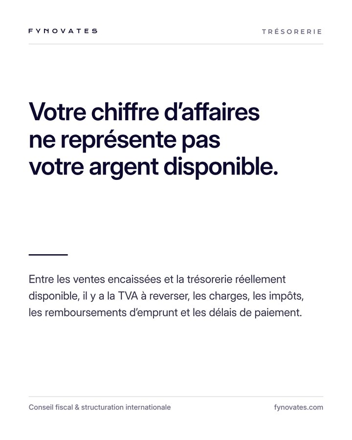
Un chiffre d’affaires élevé ne signifie pas une trésorerie confortable. TVA collectée à reverser, charges, impôts, remboursements d’emprunt, délais de paiement des clients : autant d’éléments qui séparent le montant facturé de l’argent dont l’entreprise dispose réellement. Piloter son activité, c’est suivre les trois chiffres : chiffre d’affaires, résultat et trésorerie. #Comptabilité #Trésorerie #Entrepreneuriat
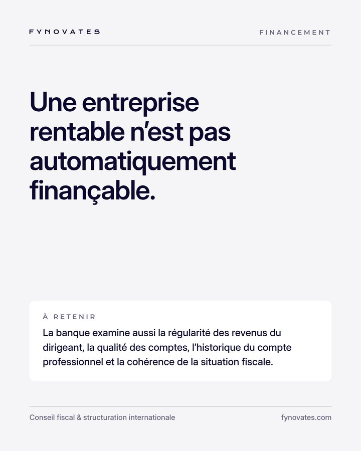
Rentable ne veut pas dire finançable. Pour accorder un crédit, une banque regarde la rentabilité, mais aussi la régularité des revenus du dirigeant, des comptes déposés et à jour, l’historique du compte professionnel et une situation fiscale claire. Un dossier se prépare bien avant la demande de financement. #Financement #Banque #Entrepreneurs
Un document de 8 pages au ton de rapport professionnel.
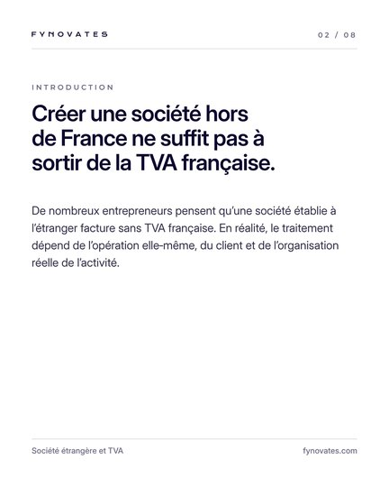
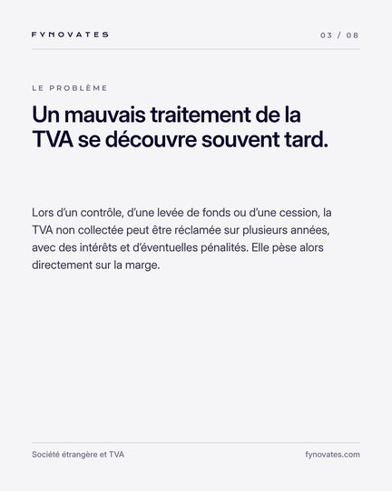
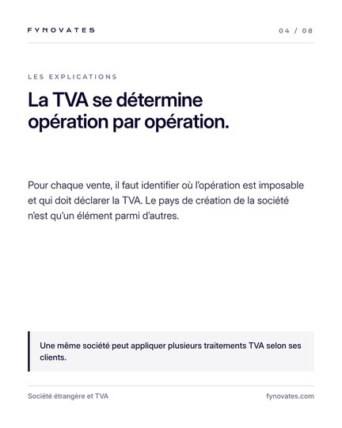
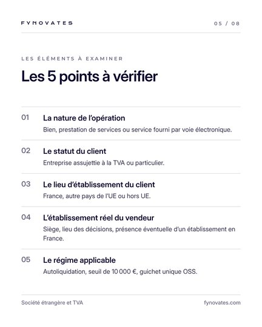
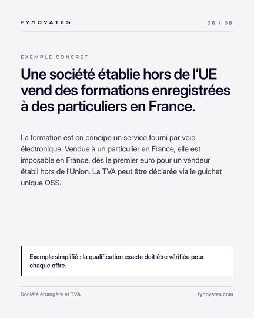
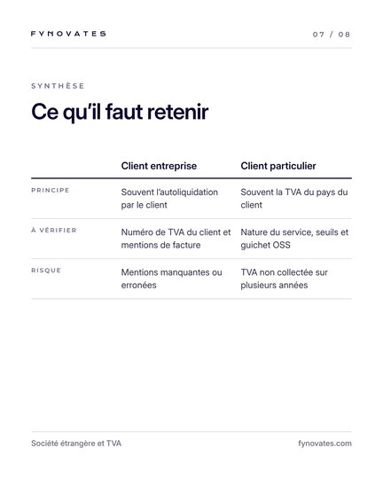
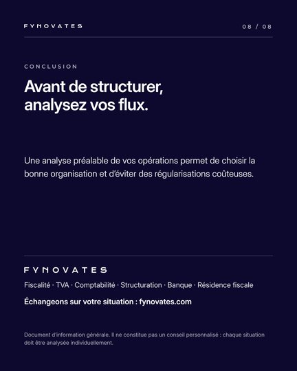
Une société étrangère ne met pas automatiquement à l’abri de la TVA française. Nous avons réuni dans ce document les cinq éléments à vérifier avant de structurer votre activité, avec un exemple concret. À lire et à partager avec les entrepreneurs concernés. #TVA #International #Structuration
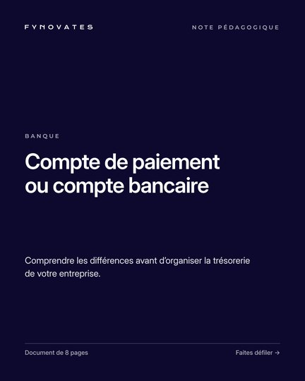
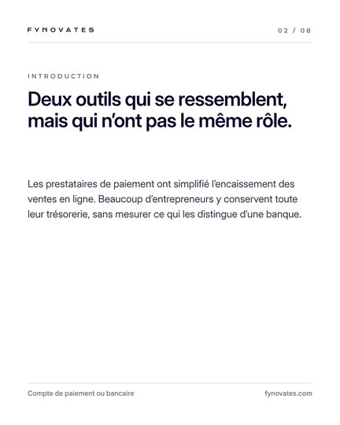
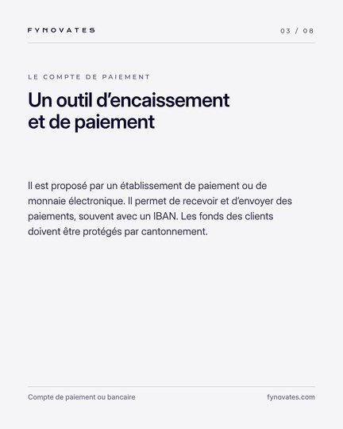
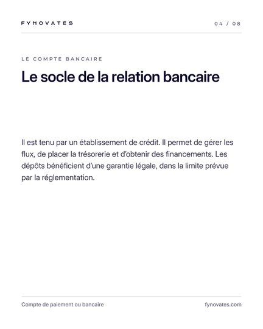
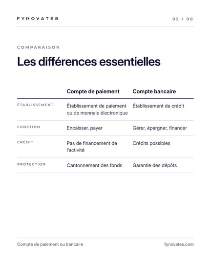
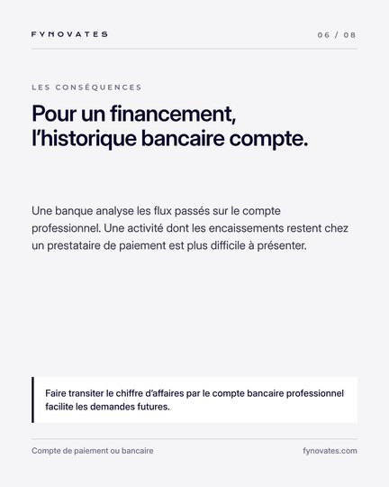
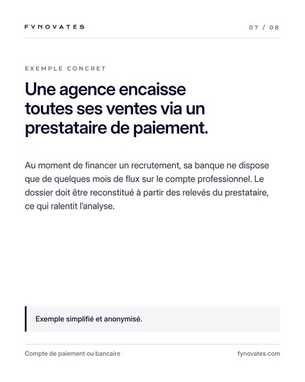
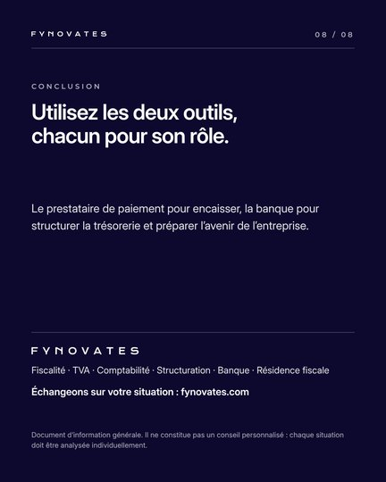
Compte de paiement, compte bancaire : deux outils souvent confondus par les entrepreneurs. Ce document explique leurs différences de statut, de fonctions et de protection, et leurs conséquences sur un futur financement. #Banque #Entrepreneurs #Trésorerie
Un mécanisme fiscal ou financier rendu lisible en une image.
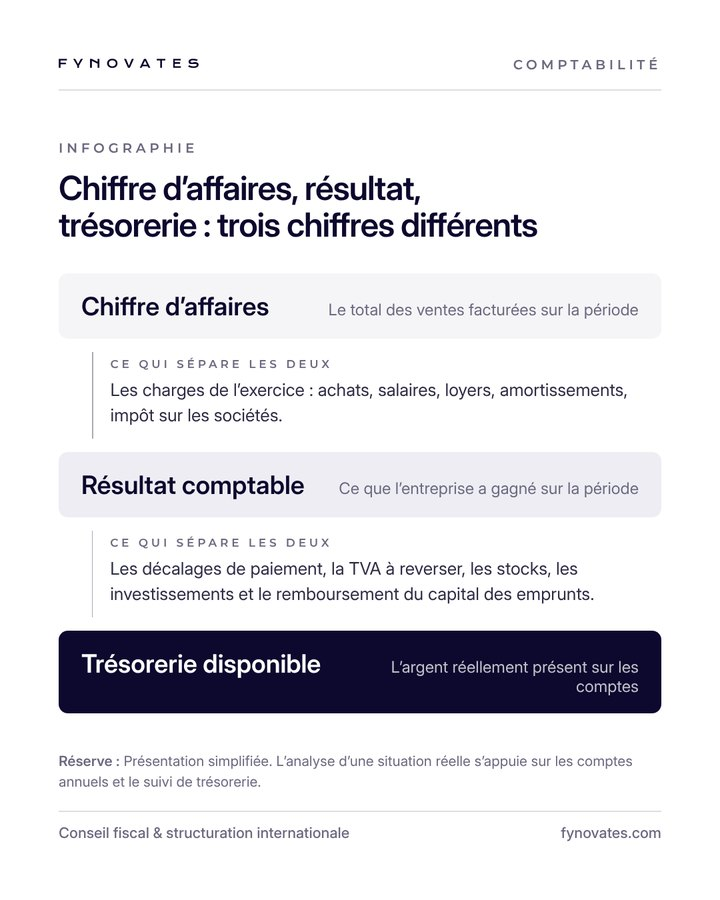
Trois chiffres, trois réalités. Le chiffre d’affaires mesure l’activité. Le résultat mesure la rentabilité. La trésorerie mesure l’argent réellement disponible. Une entreprise peut afficher un bon résultat et manquer de trésorerie, par exemple si ses clients paient tard ou si elle rembourse un emprunt. #Comptabilité #Gestion #Trésorerie
Pour savoir quelle TVA appliquer, il ne suffit pas de connaître le pays de sa société. Cinq questions structurent l’analyse : la nature de l’opération, le statut du client, son pays d’établissement, votre établissement réel et le régime applicable. C’est l’ensemble des réponses qui détermine le traitement. #TVA #Fiscalité #International
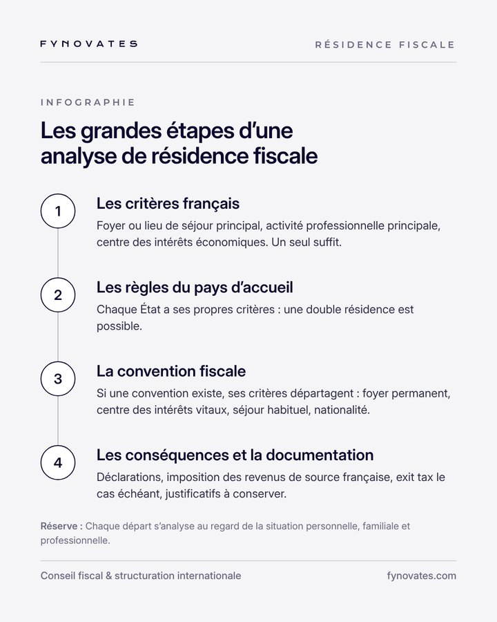
Changer de pays ne suffit pas à changer de résidence fiscale. L’analyse se fait en quatre temps : les critères français, les règles du pays d’accueil, la convention fiscale entre les deux États et, enfin, les conséquences pratiques et la documentation. Un départ se prépare, il ne se constate pas. #RésidenceFiscale #Expatriation #Fiscalité
Deux notions comparées critère par critère, avec leurs réserves.
Compte de paiement et compte bancaire ne remplissent pas les mêmes fonctions. Le premier sert à encaisser et à payer. Le second permet aussi d’épargner et de financer l’activité, et ses dépôts bénéficient d’une garantie légale. Pour une entreprise qui envisage un crédit, la relation bancaire se construit dès le début. #Banque #Entrepreneurs #Trésorerie
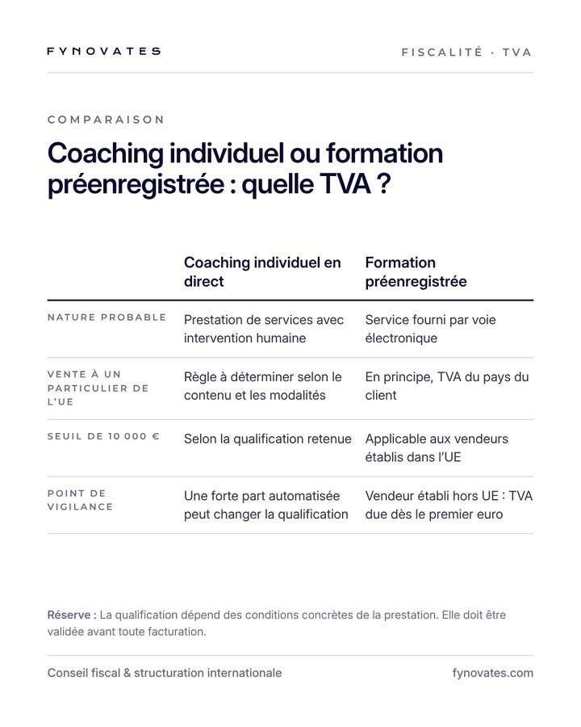
Coaching en direct et formation enregistrée : deux offres proches, deux traitements TVA potentiellement différents. Une formation préenregistrée est en principe un service fourni par voie électronique, taxé dans le pays du client particulier. Pour un coaching individuel, tout dépend du contenu et des modalités. La qualification se vérifie avant de facturer. #TVA #Formation #Infopreneurs
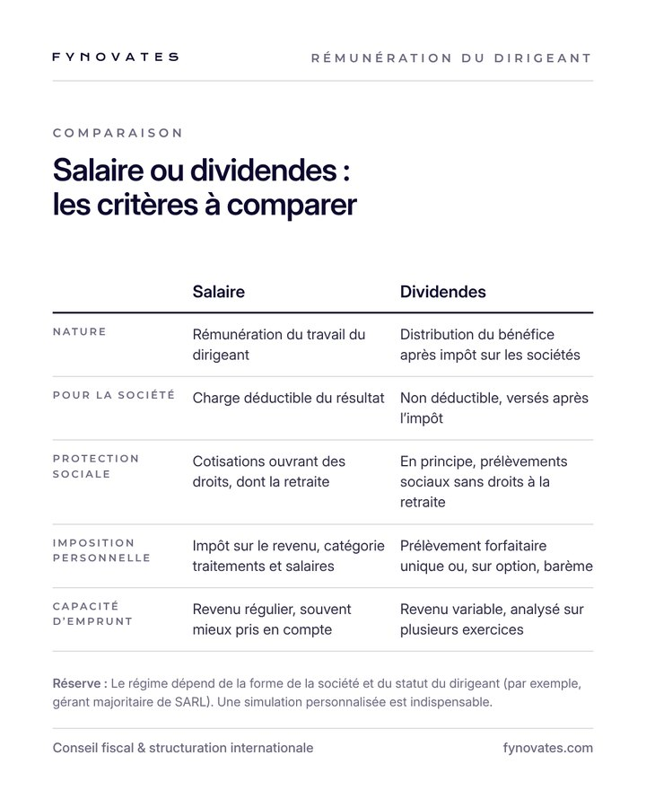
Salaire ou dividendes ? La réponse n’est jamais uniquement fiscale. Il faut comparer le coût pour la société, la protection sociale, l’imposition personnelle et l’effet sur votre capacité d’emprunt. Et les règles changent selon la forme de la société et votre statut. #Rémunération #Dirigeants #Fiscalité
Situation, difficulté, analyse, enseignement : un cas réel anonymisé.
Cas client (anonymisé) — TVA e-commerce. Une boutique en ligne vendait à des particuliers dans plusieurs pays européens en appliquant la TVA française. Une fois le seuil européen de 10 000 € dépassé, c’est pourtant la TVA de chaque pays client qui s’appliquait. L’enseignement : suivre ce seuil tout au long de l’année. #TVA #Ecommerce #OSS
Cas client (anonymisé) — Financement. Un chiffre d’affaires solide, mais un dossier difficile à présenter : rémunération irrégulière, comptes en retard, flux restés chez un prestataire de paiement. La banque analyse une trajectoire, pas un seul chiffre. #Financement #Banque #Dirigeants
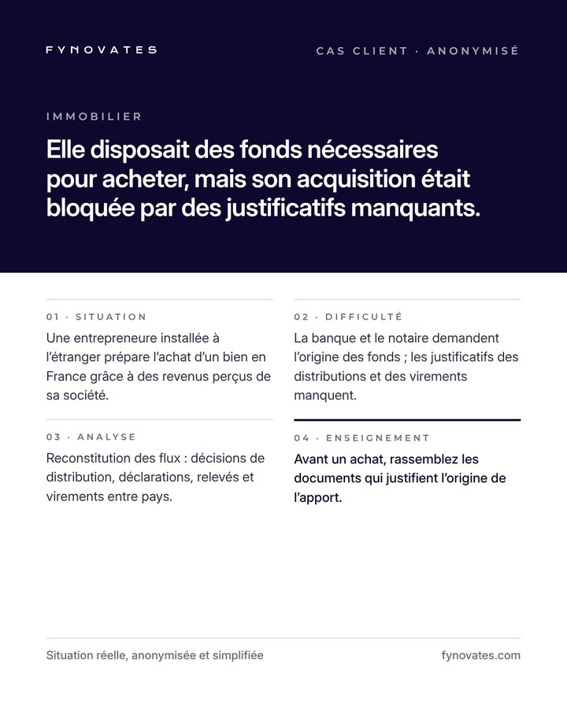
Cas client (anonymisé) — Immobilier. Les fonds étaient disponibles, mais leur origine n’était pas documentée. Banque et notaire doivent pourtant la vérifier, au titre de la lutte contre le blanchiment. Un achat immobilier commence par des justificatifs en ordre. #Immobilier #Patrimoine #Entrepreneurs
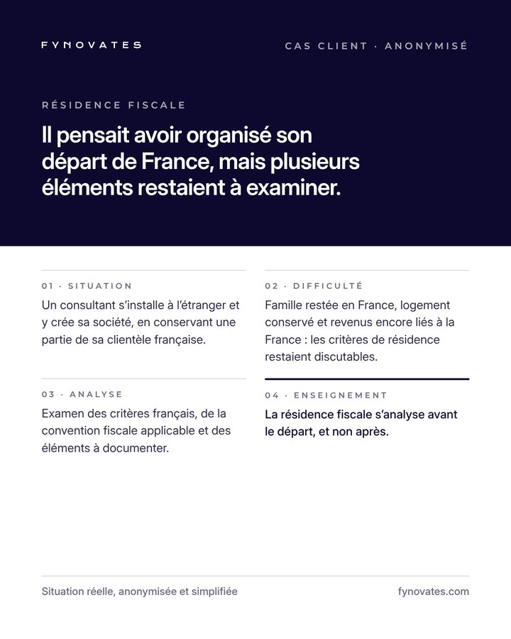
Cas client (anonymisé) — Résidence fiscale. Créer sa société à l’étranger et y déménager ne suffit pas toujours : le foyer, le lieu des revenus et le centre des intérêts économiques comptent aussi. Un départ se prépare avec une analyse complète. #RésidenceFiscale #Expatriation
Une évolution réglementaire présentée comme une note de cabinet.
Note d’information — Le seuil européen de 10 000 €. Depuis le 1er juillet 2021, les ventes à distance à des particuliers de l’UE sont soumises à un seuil unique de 10 000 € par an, tous pays confondus. Au-delà, la TVA due est celle du pays de chaque client, déclarée via le guichet unique OSS. #TVA #Ecommerce #Europe
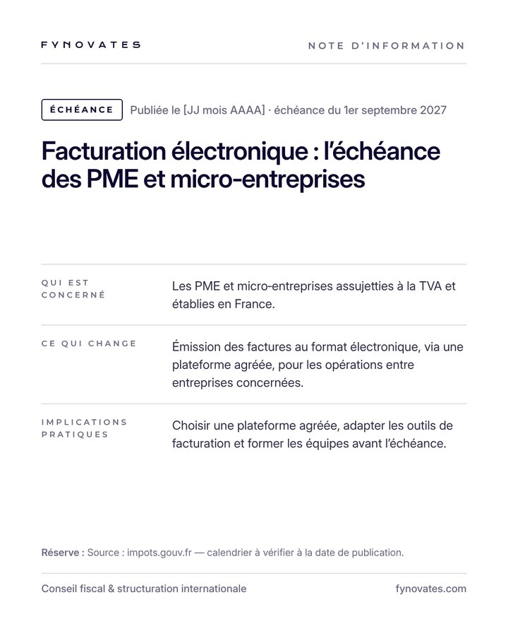
Note d’information — Facturation électronique. La généralisation de la facture électronique se poursuit. Les PME et micro-entreprises doivent anticiper le choix d’une plateforme agréée et l’adaptation de leurs outils. [Calendrier à confirmer sur impots.gouv.fr avant publication.] #FacturationÉlectronique #Comptabilité
Une prise de position signée par un expert du cabinet.
« Une structuration internationale doit correspondre à la réalité de l’activité. » [Prénom Nom], [fonction] chez FYNOVATES, rappelle qu’une structure se juge sur sa substance : où sont les dirigeants, les clients, les décisions et les moyens. #Structuration #International
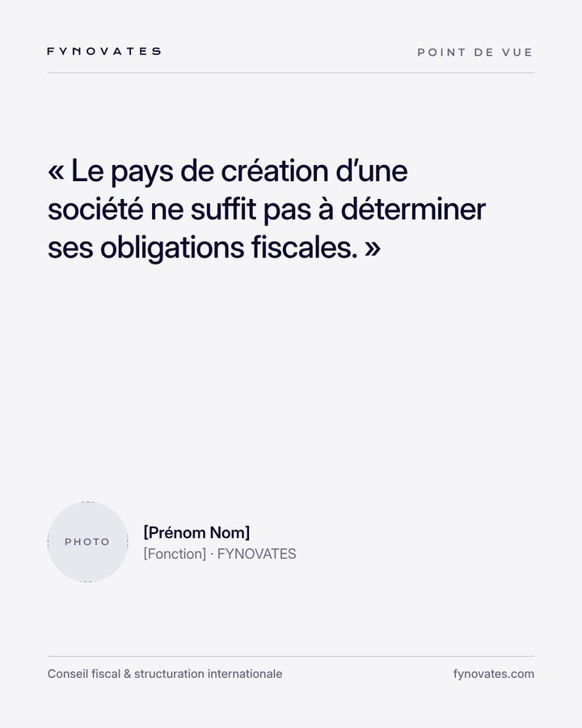
« Le pays de création d’une société ne suffit pas à déterminer ses obligations fiscales. » Le point de vue de [Prénom Nom], [fonction] chez FYNOVATES. #Fiscalité #International
« Une trésorerie disponible dans une entreprise n’est pas automatiquement un revenu personnel. » [Prénom Nom], [fonction] chez FYNOVATES, revient sur la séparation entre le patrimoine de la société et celui du dirigeant. #Trésorerie #Dirigeants
Présenter les personnes, leur rôle et leurs domaines.
Notre équipe — [Prénom Nom], [fonction]. [Présentation réelle : domaines d’intervention, types de dossiers suivis, manière d’accompagner les clients. À rédiger et valider avec la personne.] #Équipe #Fiscalité
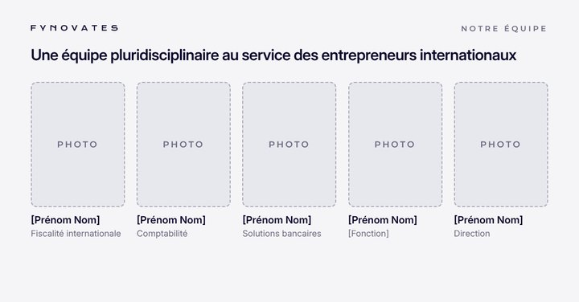
Fiscalité, comptabilité, banque, structuration : chaque dossier FYNOVATES mobilise les expertises nécessaires. [Présenter les membres réels de l’équipe et leur rôle.] #Équipe #Cabinet
Montrer comment le cabinet travaille, étape par étape.
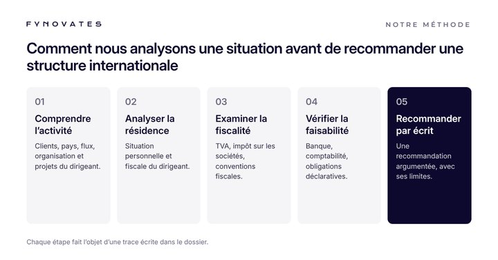
Avant de recommander une structure internationale, nous suivons cinq étapes : comprendre l’activité, analyser la résidence du dirigeant, examiner la fiscalité, vérifier la faisabilité bancaire et comptable, puis formaliser une recommandation écrite. [Méthode à valider par le cabinet avant publication.] #Méthode #Structuration
Comment un dossier passe-t-il de l’analyse initiale à l’accompagnement ? Cinq étapes, de la première prise de contact au suivi dans la durée. [Méthode à valider par le cabinet avant publication.] #Méthode #Accompagnement
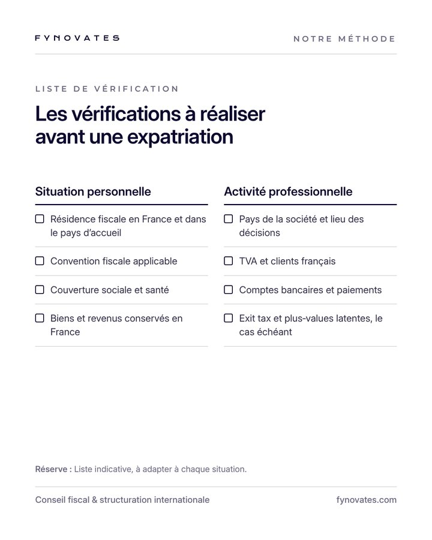
Avant de partir, huit points à vérifier, côté personnel et côté entreprise. Une expatriation réussie se prépare sur les deux plans, en même temps. #Expatriation #RésidenceFiscale
Événements, collaborations et actualités réelles du cabinet.
[Uniquement pour un événement réel et confirmé.] FYNOVATES sera présent à [nom de l’événement], le [date], à [lieu]. [Prénom Nom] interviendra sur [thème]. #Événement #Entrepreneuriat
[Uniquement pour une collaboration réelle, annoncée avec l’accord du partenaire.] [Texte de l’annonce.] #Partenariat
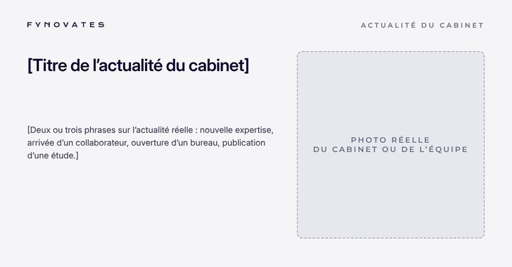
[Actualité réelle du cabinet.] #FYNOVATES